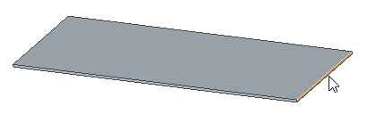
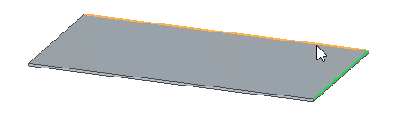
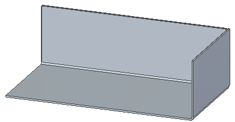
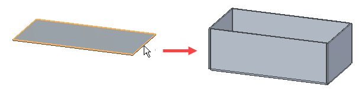
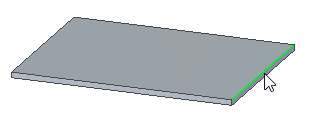
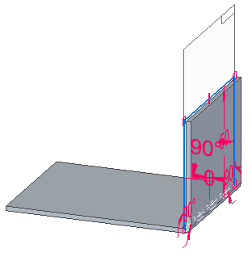
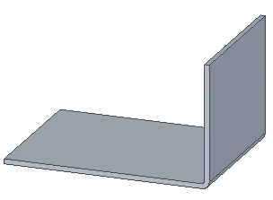
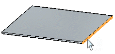
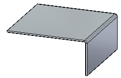
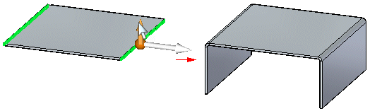

Construct a flange
Construct a flange(s) with the Multi-Edge Flange command in the ordered environment
-
Choose Home tab→Sheet Metal group→Flange list→Multi-Edge Flange
 .
. -
Select the first edge to which you want to add a flange.

-
Select the next edge to which you want to add a flange.

-
Click Accept.
-
Drag the cursor in the direction you want to place the flange(s) and click to set the distance or type a value.
Note:You can use the L hot key to lock the flange direction.
-
Click Finish on the command bar.

The default flange width is the same as the width of the edge you select. You can change the flange width by selecting one of the options from the Width Options pull down list.
Tip:-
You can also define the length of a flange by typing a value in the Distance box on the command bar.
-
You can use the options in the Offset step to create a flange offset from a selected edge or create a flange with no offset from a selected edge.
-
You can set the Select filter to Chain to create multiple flanges along a connected set of edges.

-
Construct a flange with the Flange command in the ordered environment
-
Choose Home tab→Sheet Metal group→Flange list →Flange command
 .
. -
Select the edge to which you want to add a flange.

-
Click to define the side and length of the flange.

-
Click the Finish button on the command bar.

The default flange width is the same as the width of the edge you select. You can change the flange width by selecting one of the options from the Width Options pull down list.
Tip:-
You can also define the length of a flange by typing a value in the Distance box on the command bar.
-
You can use the options in the Offset step to create a flange offset from a selected edge or create a flange with no offset from a selected edge.
-
Construct a flange in the synchronous environment
-
Select the thickness face to which you want to add a flange to display the flange start handle.

-
Click the flange extrude handle.

-
Click to set the distance or type a value.
 Note:
Note:Use the Tab button to switch between the distance and angular value controls.
-
(Optional) Type a value to change the flange angle.

-
Right-click to place the flange.

-
You can select multiple thickness faces to create multiple flanges in one operation.

When creating multiple flanges in a single operation, an entry is created in PathFinder for each flange.
-
The default flange width is the same as the width of the edge you select. You can change the flange width by selecting the Partial Flange option on the QuickBar.
Learn more
Constructing flangesLook up more details
Flange commandFlange command bar
Flange Options dialog box
Multi-Edge Flange command bar
Multi-Edge Flange Options dialog box
General tab (Multi-Edge Flange Options dialog box)
Miters and Corners tab (Multi-Edge Flange Options dialog box)